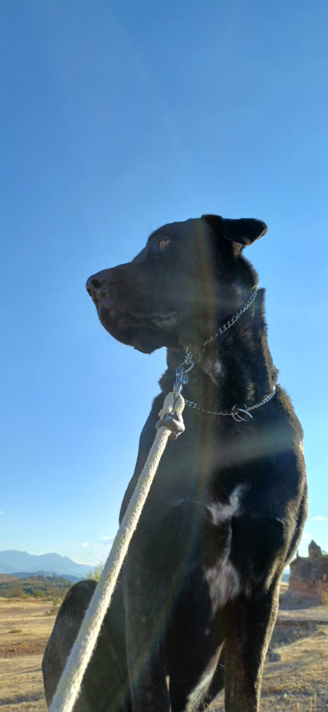
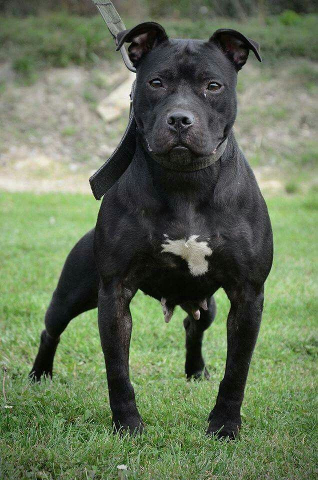
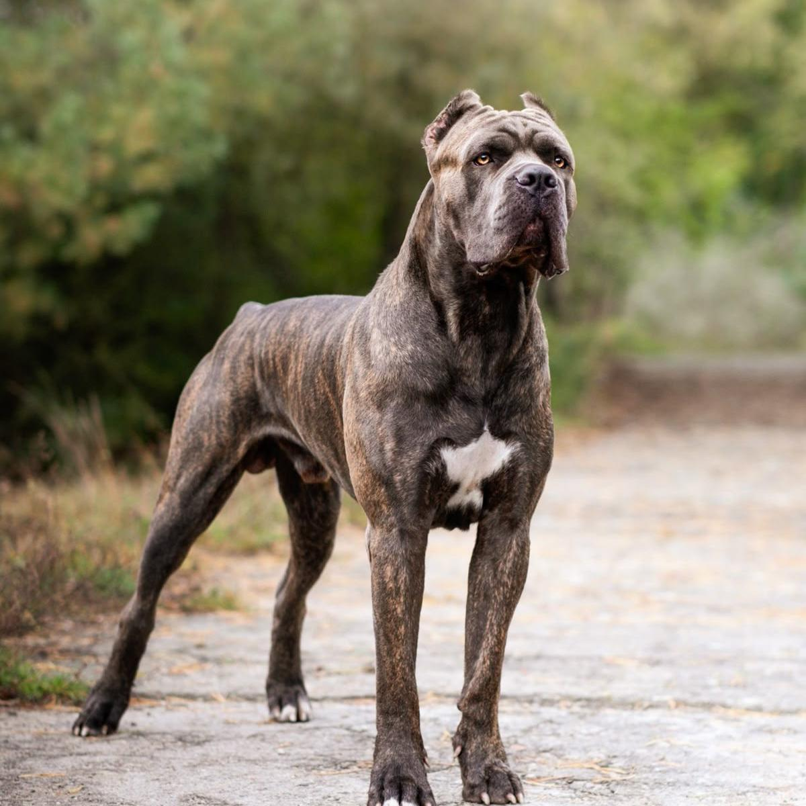
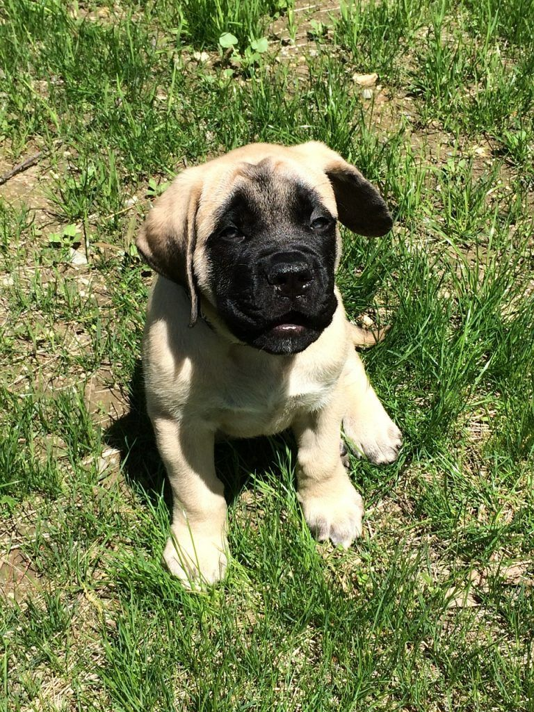

¡Bienvenido a Veterianaria el Buen Amigo! Recibe 50% de descuento en tu primera consulta y conoce nuestro cuidado médico integral.
¿Quienes Somos?
En Veterinaria El Buen Amigo, ubicada en San Luis Potosí, creemos que las mascotas no son solo animales: son compañeros de vida, confidentes, y parte de la familia. Por eso, desde el primer día que abrimos nuestras puertas, nuestra misión ha sido una sola: cuidarlos como si fueran nuestros propios.
Somos un equipo de médicos veterinarios apasionados, con años de experiencia y, sobre todo, con un amor genuino por los animales. Sabemos que cuando tu mascota no está bien, tú tampoco lo estás. Por eso nos tomamos cada consulta en serio, cada diagnóstico con cuidado, y cada tratamiento con la dedicación que tu compañero peludo se merece.
¿Por qué El Buen Amigo?
Porque ese nombre lo dice todo. Aquí no somos una clínica fría ni un lugar donde solo "se atienden animales". Somos el lugar al que puedes llegar con confianza, con preguntas, con nervios o con urgencia, y salir sabiendo que tu mejor amigo está en las mejores manos. En SLP hay muchas opciones, pero pocos lugares donde te traten a ti y a tu mascota con el mismo respeto y calidez que merece alguien de la familia. Eso es exactamente lo que encontrarás aquí.
Nuestro compromiso
Atención profesional, trato humano y precios honestos. Sin rodeos, sin letra chica. Porque si confías en nosotros con lo que más quieres, lo mínimo que podemos darte es transparencia y entrega total. Bienvenido a El Buen Amigo. Tu mascota ya encontró a los suyos.
Vacunas 🐶
¿Cada cuándo le toca vacuna a tu perro?Esto debes saber Muchos dueños de mascotas se preguntan si realmente es necesario vacunar a su perro todos los años, y la respuesta corta es: sí, y más de lo que crees. Las vacunas no solo protegen a tu perro de enfermedades graves como el moquillo, la parvovirus o la rabia, sino que también cuidan a tu familia y a otros animales con los que convive. Un perro sin vacunas es un riesgo silencioso que muchos subestiman.
El esquema básico comienza desde las 6 a 8 semanas de vida con las primeras dosis, y se refuerza cada año a lo largo de toda su vida. No importa si tu perro no sale mucho o si "se ve sano", los virus no avisan antes de llegar. En SLP hay zonas donde el contacto con otros animales es frecuente, y eso hace que mantener el calendario al día sea todavía más importante.
La buena noticia es que vacunar a tu mascota es rápido, económico y sin complicaciones. En El Buen Amigo te ayudamos a llevar su cartilla al corriente y te recordamos cuándo toca la siguiente dosis. Porque prevenir siempre va a ser más fácil, más barato y menos doloroso que curar.
Alimentación 🐱
¿Le estás dando la comida correcta a tu gato?
Probablemente no
El gato es uno de los animales más malentendidos en cuanto a nutrición. Muchos dueños les dan
croquetas de perro, sobras de comida o leche de vaca pensando que está bien, y en realidad eso puede
causar desde problemas digestivos hasta enfermedades renales a largo plazo. Los gatos son carnívoros
estrictos, y su cuerpo necesita nutrientes específicos que solo se encuentran en alimentos
formulados para ellos.
Un error muy común es darles solo comida húmeda o solo croquetas sin considerar la hidratación. Los
gatos naturalmente toman poca agua, por lo que combinar ambos tipos de alimento y tener siempre agua
fresca disponible puede marcar una gran diferencia en su salud. Los cálculos urinarios, uno de los
problemas más frecuentes en gatos, muchas veces se pueden prevenir simplemente con una buena dieta y
suficiente agua.
Si no sabes bien qué marca elegir o cuánto darle según su edad y peso, no adivines, pregúntanos. En
El Buen Amigo podemos orientarte sin costo en tu próxima visita, porque una buena alimentación desde
cachorro puede ahorrarte muchos dolores de cabeza y visitas de urgencia en el futuro.
¿Que Razas atendemos?
En El Buen Amigo nos apasionan especialmente los perros de razas grandes. Esos que ocupan todo el sillón, que te tumban de un salto de emoción y que, seamos honestos, tienen más personalidad que muchas personas. Sabemos que atender a un Gran Danés no es lo mismo que atender a un Chihuahua, y por eso contamos con instalaciones, equipo y experiencia pensados para ellos.
- 🐕 Rottweiler — fuerte, noble y más tierno de lo que parece
- 🐕 Gran Danés — el gigante gentil que necesita cuidados especiales
- 🐕 Dóberman — elegante, leal y con una disciplina admirable
- 🐕 Boxer — juguetón, protector y con una energía que no para
- 🐕 Mastín — imponente por fuera, un bebé por dentro
- 🐕 Akita — reservado, majestuoso y de una lealtad sin igual
- Y muchos mas...



Nuestros mejores clientes
De izquierda a derecha: Mastin Napolitano, American Pitbull Terrier, Mastin Italiano

Razas que pocos atienden, Kangal Turco, Boerboel, Tosa Inu.
Un lugar dedicado a tu gran amigo.